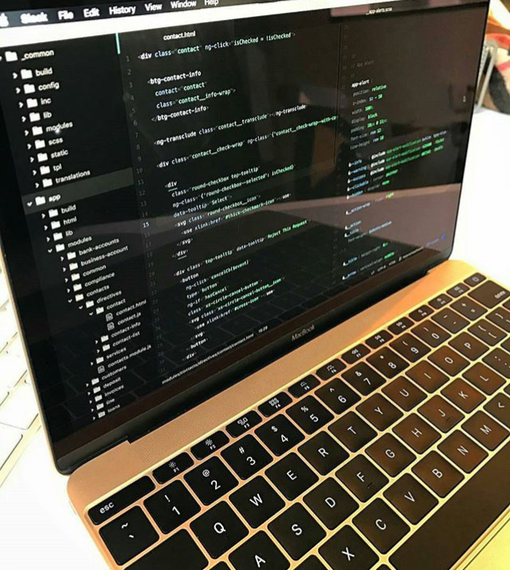

Javascript history

July 23, 2019 | 3 comments
With two decades of improvement, JavaScript has
become one of the most popular programming languages of all time.
The journey started in 1995 when Brendan Eich created JavaScript in
just 10 days. From there, it has seen multiple revisions, drafts,
and growth in the form of frameworks, API’s, modules, etc. Today, we
will go forward and list the top
JavaScript blogs from the internet so that you can
enjoy the lastest development in the field of JavaScript.
CONTINUE READING...
Learning javascript
Learning JavaScript, on the other hand, can be a
tricky proposition. New libraries, features, API’s or Style Guide,
pop up almost every day. The speed of iteration is beyond
imagination, and that is why reading leading JavaScript blogs are
the best approach to keep up with new changes.
CONTINUE READING...

July 23, 2019 | 3 comments
Arrays
Arraysa are list-like objects whose prototype has
methods to perform traversal and mutation operations. Neither the
length of a JavaScript array nor the types of its elements are
fixed. Since an array's length can change at any time, and data
can be stored at non-contiguous locations in the array, JavaScript
arrays are not guaranteed to be dense; this depends on how the
programmer chooses to use them. In general, these are convenient
characteristics; but if these features are not desirable for your
particular use, you might consider using typed arrays.
CONTINUE READING...

July 5 2020 | 50 comments
Client side web APIs
When writing client-side JavaScript for web sites or applications,
you will quickly encounter Application Programming Interfaces
(APIs). APIs are programming features for manipulating different
aspects of the browser and operating system the site is running
on, or manipulating data from other web sites or services. In this
module, we will explore what APIs are, and how to use some of the
most common APIs you'll come across often in your development
work.
CONTINUE READING...